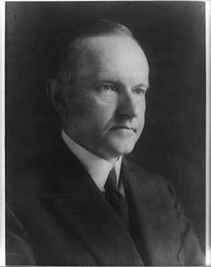

This presidency falls in the realignment era (1896–1932), when the two parties were trading positions and both had progressive and conservative wings.
Became president when Harding died and was sworn in by his father, a notary, at the family farmhouse in Vermont. He appointed special counsels to prosecute the Harding scandals, cut income taxes twice, ran a surplus every year and paid down about a fifth of the national debt. He signed the Immigration Act of 1924 and the law granting citizenship to all Native Americans, and twice vetoed farm relief.
Shaded areas show the years in office, with a few years before and after for comparison. Budget years ran July to June until 1976 (now October to September), so each year's figures cover parts of two calendar years.
June 30, 1923 (end of fiscal 1923): $22.35 billion → June 30, 1928 (end of fiscal 1928): $17.60 billion
Daily debt figures don't exist before 1993, so Coolidge's numbers use the fiscal years closest to his term, the same rule as every other page.
Debt as a share of GDP. Above 100% means the debt is bigger than a year of everything the country produces.
Money borrowed each budget year (below the line) or paid down (above).
1923: 3.2% → 1928: 4.4%. Yearly averages; monthly figures begin in 1948. Estimates by economist Stanley Lebergott (NBER, 1957).
How much prices rose each year (consumer price index).
What everyday prices and paychecks did while in office.
Prices use the consumer price index (MeasuringWorth). The minimum wage is the federal rate set by Congress.
1,203 orders. Count from the American Presidency Project.
Yearly counts aren't reliable for this era. Orders were not numbered until 1907, when the State Department numbered the ones already in its files, and many orders were never numbered at all, so only the total is shown.
Source: American Presidency Project: executive orders (full list of every order).
Most orders in this era were routine, such as setting aside public land or exempting jobs from civil service rules.
A pardon wipes out the punishment for a federal crime; a commutation shortens a sentence but leaves the conviction. Counts are by federal fiscal year (July to June). The Justice Department counts fiscal 1924, which began a month before he took office, and all of fiscal 1929, including Hoover's first four months, under Coolidge. In December 1923 he also freed the remaining prisoners held under the World War I Espionage Act.
Source: U.S. Dept. of Justice, clemency statistics, which lists every recipient with the crime and sentence.
The crime: Mail fraud in selling stock in his Black Star Line shipping company (convicted 1923)
Sentence: Five years; served about three
Why it drew attention: The Black nationalist leader was released on condition that he be deported to Jamaica. Biden granted him a posthumous pardon in 2025.
SourceThe same checklist for every president. Tap a row for details and sources.
No articles of impeachment were voted on.
Never charged.
No one he appointed was convicted. Officials from Harding's administration were prosecuted during his term.
In 1924 he appointed Owen Roberts, a Republican, and Atlee Pomerene, a Democrat, to prosecute the Teapot Dome cases. Their work led to the conviction of former Interior Secretary Albert Fall.
SourceHe forced out Attorney General Harry Daugherty in 1924. His new attorney general, Harlan Stone, put J. Edgar Hoover in charge of the Bureau of Investigation to clean it up.
SourceWhat happened, what was proven, and how it ended.
Set national quotas based on the 1890 census that sharply cut immigration from southern and eastern Europe and barred almost all immigration from Asia. Coolidge said he objected to the Japanese exclusion but signed the law.
Outcome: The quota system lasted until 1965.
SourceFarmers were in a long depression. Coolidge twice vetoed the McNary–Haugen bill, which would have had the government buy surplus crops, calling it price-fixing.
Outcome: Congress failed to override; farm prices stayed low into the Depression.
SourceThe worst river flood in U.S. history displaced about 700,000 people. Coolidge declined to visit or to call a special session for relief, leaving the response to Commerce Secretary Herbert Hoover. Black refugees were held in camps and forced to work on the levees.
Outcome: Congress passed the Flood Control Act of 1928.
SourceWidely quoted remarks, with the context they were said in.
After all, the chief business of the American people is business.
The collection of any taxes which are not absolutely required ... is only a species of legalized larceny.
I do not choose to run for President in nineteen twenty eight.